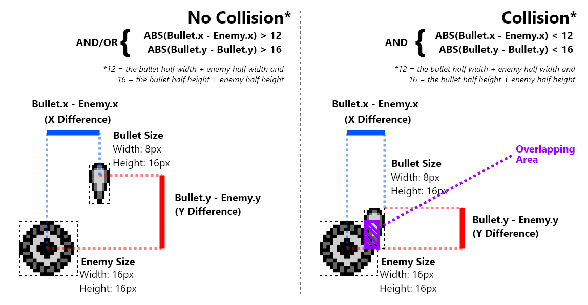

Object Collision Detection
Collision Detection is cruical to games. It can be a very complicated topic. In Galactic Armada, things will be kept super simple. We’re going to perform a basic implementation of “Axis-Aligned Bounding Box Collision Detection”:
One of the simpler forms of collision detection is between two rectangles that are axis aligned — meaning no rotation. The algorithm works by ensuring there is no gap between any of the 4 sides of the rectangles. Any gap means a collision does not exist.1
The easiest way to check for overlap, is to check the difference bewteen their centers. If the absolute value of their x & y differences (I’ll refer to as “the absolute difference”) are BOTH smaller than the sum of their half widths, we have a collision. This collision detection is run for bullets against enemies, and enemies against the player. Here’s a visualization with bullets and enemies.

For collision detection between objects in our object pool, we’ll setup a universal function. This function, called CheckCollisionWithObjectsInHL_andDE, will have 4 requirements:
- A pointer to Object A in
hl - A pointer to Object B in
de - The minimum allowed distance on the x axis in
wSizeX - The minimum allowed distance on the y-axis in
wSizeY
Create a file called object-collision.asm and add the following code:
include "src/main/includes/hardware.inc"
include "src/main/includes/constants.inc"
include "src/main/includes/hardware.inc"
SECTION "ObjectObjectCollisionVariables", WRAM0
wSizeY:: db
wSizeX:: db
wCheckByte: db
SECTION "ObjectObjectCollision", ROM0
The logic for checking the distance on the x & y axes is identical. For that reason, we’ve isolated it into a function called CheckObjectBytesOfObjects_InDE_AndHL. We’ll cover that function before we cove the CheckCollisionWithObjectsInHL_andDE function.
Comparing the bytes on our two objects
All of our object’s data share the same order and structure. For collision detection, we want to check the same bytes (the 2 x bytes , or the 2 y bytes) for 2 different objects. For this, we’ve created the function called CheckObjectBytesOfObjects_InDE_AndHL. This function has 3 requirements:
- A pointer to Object A in
hl - A pointer to Object B in
de - Which byte to check in
wCheckByte
This function uses the CheckObjectPositionDifference function that comes with the starter. Our x & y bytes are Q12.4 fixed point integers. Before we can use them, we need to descale them. After descaling them, we’ll call the CheckObjectPositionDifference function and use it’s result as our own.
CheckObjectBytesOfObjects_InDE_AndHL::
; put de in hl so we can get the x bytes (for the de object) in bc and descale just to c
push hl
; Offset de by the check byte
ld a, [wCheckByte]
add a,e
ld e,a
; copy the low byte to c
ld a, [de]
ld c, a
; move to the high byte
inc de
; copy the high byte to b
ld a, [de]
ld b, a
; Descale
REPT 4
srl b
rr c
ENDR
ld a, c
ld [wObject1Value], a
pop hl
; get the bytes (for the hl object) in bc and descale just to c
ld a, [wCheckByte]
add a, l
ld l, a
; move to the high byte
ld a, [hli]
ld c, a
; copy the high byte to b
ld a, [hl]
ld b, a
; Descale
REPT 4
srl b
rr c
ENDR
ld a, c
ld [wObject2Value], a
CheckObjectPositionDifference::
; at this point in time; e = enemy.y, b =bullet.y
ld a, [wObject1Value]
ld e, a
ld a, [wObject2Value]
ld b, a
ld a, [wSize]
ld d, a
; subtract bullet.y, (aka b) - (enemy.y+8, aka e)
; carry means e<b, means enemy.bottom is visually above bullet.y (no collision)
ld a, e
add a, d
cp a, b
; carry means no collision
jp c, CheckObjectPositionDifference_Failure
; subtract enemy.y-8 (aka e) - bullet.y (aka b)
; no carry means e>b, means enemy.top is visually below bullet.y (no collision)
ld a, e
sub a, d
cp a, b
; no carry means no collision
jp nc, CheckObjectPositionDifference_Failure
CheckObjectPositionDifference_Intersection:
ld a,1
and a
ret;
CheckObjectPositionDifference_Failure:
ld a,0
and a
ret;
Checking for collision
Now that we’ve defined the CheckObjectBytesOfObjects_InDE_AndHL function, we can implement our main function.
Create the CheckCollisionWithObjectsInHL_andDE function in your object-collision.asm
Note: This function should be exported, since it is going to be callled in other files.
CheckCollisionWithObjectsInHL_andDE::
The x-axis is up first. In a nutshell, we simply pass which byte we and distance we want to check to the CheckObjectBytesOfObjects_InDE_AndHL function. If it returns a value of zero, there is no overlap on that axis. Otherwise, we’ll proceed on to check the y-axis
Copy the following into the CheckCollisionWithObjectsInHL_andDE function
XAxis:
; Save which byte we are checking
ld a, object_xLowByte
ld [wCheckByte], a
; Save if the minimum distance
ld a, [wSizeX]
ld [wSize], a
; SAve original values for y axis
push de
push hl
call CheckObjectBytesOfObjects_InDE_AndHL
; Restore original vaues just in case
pop hl
pop de
jp nz, YAxis
ld a,0
and a
ret
After checking the x-axis, we’ll do the same thing for the y-axis.
YAxis:
; Save which byte we are checking
ld a, object_yLowByte
ld [wCheckByte], a
; Save if the minimum distance
ld a, [wSizeY]
ld [wSize], a
call CheckObjectBytesOfObjects_InDE_AndHL
; Normal return with the z/c flags as-is
ret
After the CheckObjectBytesOfObjects_InDE_AndHL function is called, we’ll return from the CheckCollisionWithObjectsInHL_andDE function. The result flags from the last CheckObjectBytesOfObjects_InDE_AndHL will be used for the whole function.